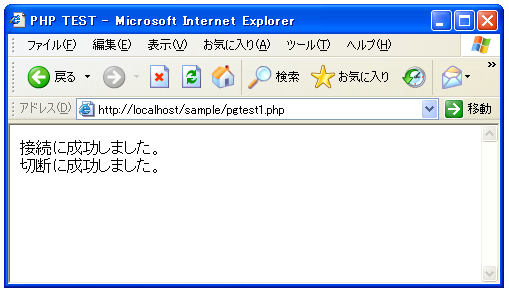

- Home ›
- PHP入門 ›
- PostgreSQLへの接続
PostgreSQLへ接続
それでは実際にPHPを使ってPostgreSQLへ接続してみます。「pg_connect」関数を使います。
pg_connect resource pg_connect(string connection_string [, int connect_type])
pg_connect() は、connection_string で指定された情報を用いてデータベース
との接続をオープンします。同じ connection_string 引数で 2 回 pg_connect()
関数がコールされた場合は、connect_type に PGSQL_CONNECT_FORCE_NEW を指定
していない限り既存の接続が返されます。
引数:
connection_string 接続するデータベースやユーザー名などを指定する文字
列。デフォルトの値以外に指定する部分を記述します。個々のパラメータは
keyword = value の形式で 設定します。等号の前後の空白はあってもなく
てもかまいません。 空の値や空白を含む値を指定する場合は、その値をシ
ングルクォートで 囲みます。（例: keyword = 'a value'）
値の中に シングルクォートやバックスラッシュが含まれる場合は、それら
を バックスラッシュでエスケープする必要があります（例: ¥' および ¥¥）。
現在利用できるパラメータは以下のとおりです。 host, hostaddr, port,
dbname, user, password, connect_timeout, options, tty（無視されます）,
sslmode, requiressl（非推奨。代わりに sslmode を推奨します）および
service 。これらのうち実際にどの パラメータが使えるかは、PostgreSQL
のバージョンに依存します。
connect_type PGSQL_CONNECT_FORCE_NEW が渡された場合は、たとえ
connection_string が既存の接続と まったく同一であっても新しい接続
をオープンします。
返り値:
成功した場合にPostgreSQLの接続リソース、失敗した場合にFALSEを返します。
実際に指定する値としてはPostgreSQLのホスト名(host)やデータベース名(dbname)、そしてユーザー名(user)とパスワード(password)などかと思います。
$link = pg_connect("host=localhost dbname=db user=usr password=pass");
PostgreSQLからの切断
接続後、接続を切断するには「pg_close」関数を使います。
pg_close bool pg_close([resource connection])
connection リソースで指定した PostgreSQL データベースへの持続的でない接
続を閉じます。
引数:
connection PostgreSQL データベース接続リソース。connection が指定され
ていない場合はデフォルトの接続が使用されます。デフォルトの接続は、直
近の pg_connect() あるいは pg_pconnect() によって作成されたものです。
返り値:
成功した場合に TRUE を、失敗した場合に FALSE を返します。
実際の使い方は下記のようになるかと思います。
$link = pg_connect("host=localhost dbname=db user=usr password=pass");
// PostgreSQLに対する処理
pg_close($link);
エラー処理
PostgreSQLに対する処理の過程で何かエラーが発生した場合「pg_last_error」関数でエラーメッセージを取得することが出来ます。
pg_last_error string pg_last_error([resource connection])
pg_last_error() は、指定した connection から直近のエラーメッセージを返
します。
引数:
connection PostgreSQL データベース接続リソース。connection が指定され
ていない場合はデフォルトの接続が使用されます。デフォルトの接続は、直
近の pg_connect() あるいは pg_pconnect() によって作成されたものです。
返り値:
指定した connection の直近のエラーメッセージを 含む文字列を返します。
エラー時には FALSE を返します。
例えば「pg_connect」関数利用時にエラーが発生した場合、エラーメッセージを見るには下記のように記述します。
$link = pg_connect("host=localhost dbname=db user=usr password=pass");
if (!$link) {
print(pg_last_error());
}
// PostgreSQLに対する処理
pg_close($link);
実際には接続に失敗した場合、その後のPostgreSQLに対する処理を実行出来ない為、「exit」関数又は「die」関数を用いてスクリプトを終了させます。
$link = pg_connect("host=localhost dbname=db user=usr password=pass");
if (!$link) {
die('接続失敗です。'.pg_last_error());
}
// PostgreSQLに対する処理
pg_close($link);
※「exit」関数及び「die」関数については『スクリプトを終了する(exit, die)』を参照して下さい。
テスト
では実際に試してみます。ユーザー名「pguser」パスワード「pguser」で「uriage」データベースへ接続を行います。
<html>
<head><title>PHP TEST</title></head>
<body>
<?php
$conn = "host=localhost dbname=uriage user=pguser password=pguser";
$link = pg_connect($conn);
if (!$link) {
die('接続失敗です。'.pg_last_error());
}
print('接続に成功しました。<br>');
// PostgreSQLに対する処理
$close_flag = pg_close($link);
if ($close_flag){
print('切断に成功しました。<br>');
}
?>
</body>
</html>
上記ファイルをWWWサーバに設置しブラウザ経由で見ると下記のように表示されます。

( Written by Tatsuo Ikura )

著者 / TATSUO IKURA
初心者～中級者の方を対象としたプログラミング方法や開発環境の構築の解説を行うサイトの運営を行っています。